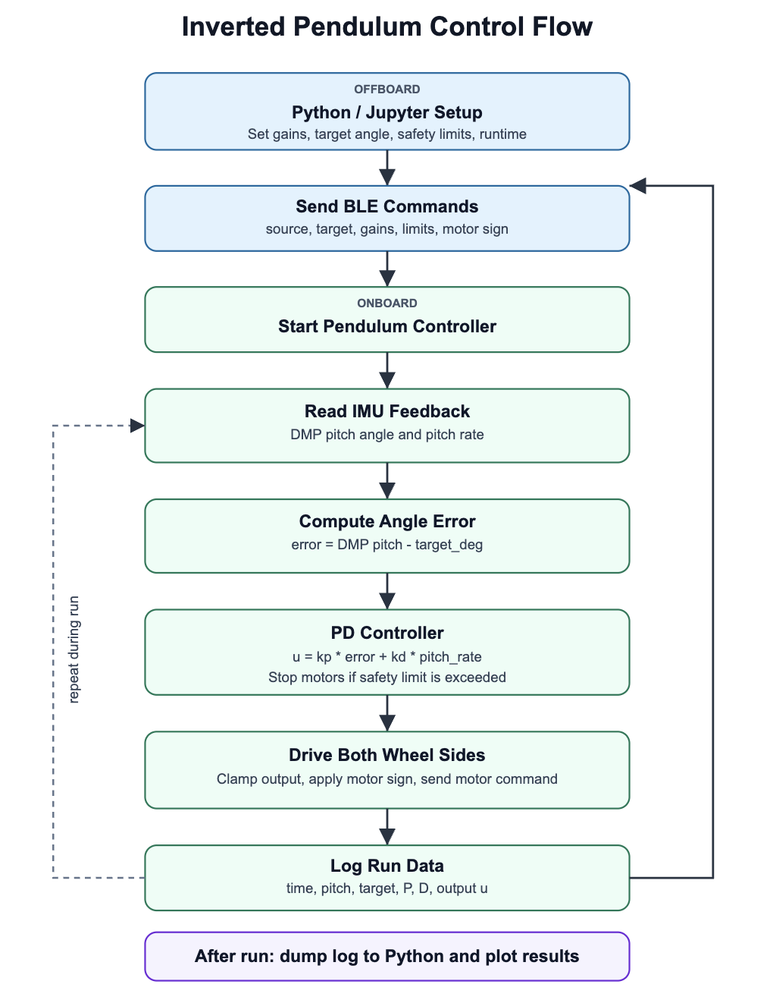
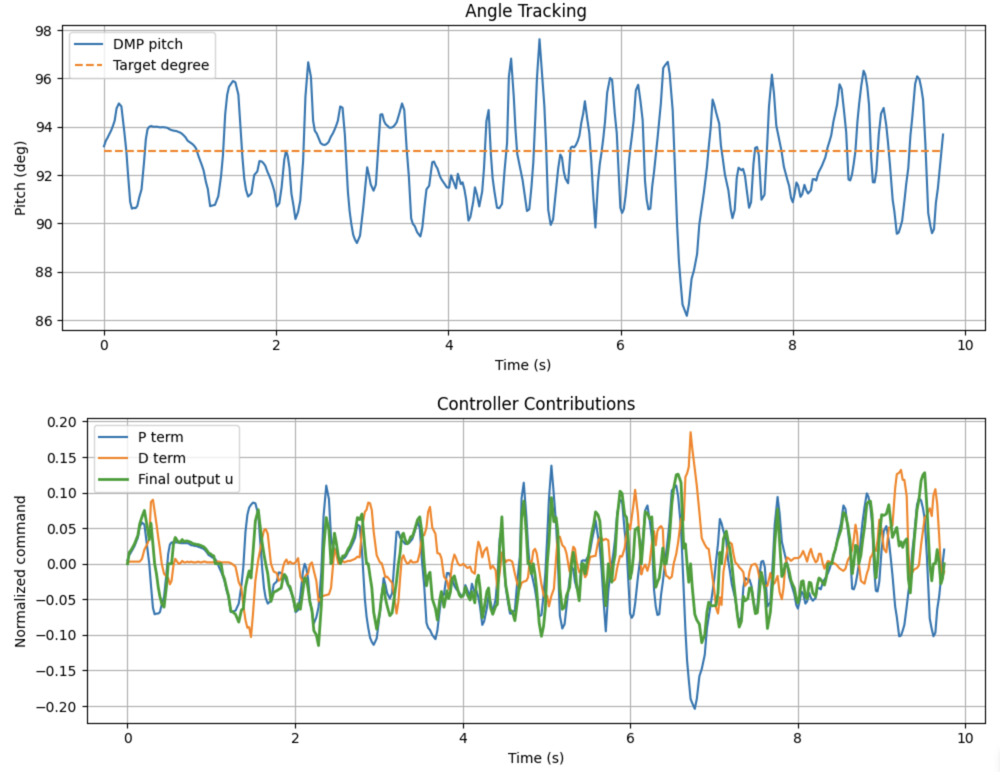

Can’t believe it’s already the final lab for this class. I decided to do the inverted pendulum since it felt like a fun way to end the semester. I balanced the robot upright using closed loop control and IMU feedback. Instead of trying to swing the robot up from the ground, I used the easier and more stable approach of starting the robot near upright and stabilizing around that position.
The overall setup for this lab was pretty simple compared to some of the previous labs. The robot used IMU feedback to determine its pitch angle and continuously drove forward or backward to stay balanced.
At first, I tested the robot by holding it upright and using that initial angle as the balancing target. This worked sometimes, but every run started slightly differently depending on how I held the robot. After looking through the plots and testing different values, I noticed the robot naturally balanced closest around 93 degrees, so I changed the controller to always target that angle directly instead of depending on the startup position.
The final tuned values ended up being a proportional gain of 0.03, derivative gain of -0.002, and no integral gain. The safety limit was set to 25 degrees and the maximum motor output was limited to 0.25 to prevent the robot from overcorrecting too aggressively. During successful runs, I would hold the robot upright for about a second, let the controller stabilize, and then slowly release it.
One thing I noticed during tuning was that larger proportional and derivative gains made the robot rock back and forth very aggressively. The robot would quickly overshoot the target angle and throw itself over the other side. Reducing the gains and lowering the motor output made the motion much smoother and more controllable.
This lab definitely took way too many tuning runs before finally working consistently.
The balancing controller was implemented onboard the Artemis using a PD controller. The robot continuously compared the current DMP pitch angle against the target angle of 93 degrees and adjusted the wheels to try to stay upright. The basic idea was that if the robot tilted too far in one direction, the wheels would drive to catch it. If it tilted the other way, the wheels would drive the opposite direction. The farther the robot got from the target angle, the stronger the correction became.
The first part of the controller allowed the target angle to be changed from Python. This made tuning much easier because I could change the balancing point without reuploading the Arduino code every time.
static inline void pendulum_set_target(float target_deg) {
g_pend.target_pitch_deg = target_deg;
}
static inline float pendulum_get_angle_deg() {
return imu_get_dmp_pitch_deg();
}The robot then read the current DMP pitch angle and compared it against the target angle. This gave the error used by the controller.
const float pitch_deg = pendulum_get_angle_deg();
const float pitch_rate_dps = pendulum_get_rate_dps();
const float error_deg =
imu_wrap_deg(pitch_deg - g_pend.target_pitch_deg);The actual balancing logic was done with a proportional and derivative term. The proportional term pushed the wheels harder when the robot was farther from the target angle, while the derivative term used angular velocity to damp the motion when the robot started falling too quickly.
const float p_term = g_pend.kp * error_deg;
const float d_raw = g_pend.kd * pitch_rate_dps;
g_pend.filtered_d = g_pend.d_alpha * d_raw
+ (1.0f - g_pend.d_alpha) * g_pend.filtered_d;
float u = p_term + g_pend.filtered_d;
u = clamp(u, -g_pend.max_u, g_pend.max_u);
u *= g_pend.motor_sign;
if (fabs(u) < g_pend.min_u) {
u = 0.0f;
}
motors_set_normalized(u);The system was split between Python on my laptop and the Artemis on the robot. Python/Jupyter handled the setup by sending the controller gains, target angle, safety limit, motor sign, output limit, and runtime over BLE. After the controller started, the real time balancing loop ran onboard the Artemis. This was important because the robot could not depend on Python or BLE timing while balancing.
During the run, the Artemis repeatedly read the DMP pitch angle, computed the angle error, checked the safety limit, calculated the PD output, clamped the motor command, and drove both wheel sides. If the robot tilted too far away from the target angle, the controller stopped the motors for safety. After the run, Python dumped the saved data and plotted the results.

The final test runtime was 15 seconds. Data was saved every 20 ms so the log could cover the full run instead of filling too quickly. The controller itself ran faster than the saved logging rate, so logging did not determine the speed of the balancing loop. The onboard loop was fast enough for real time reaction, and the main limitations were tuning, motor behavior, and the unstable physics of balancing.
Here is the first video of it running:

The plot shows that the run from the first video stayed within about ±4 degrees of the target of 93 degrees for most of the test, with a few larger dips when the robot started falling but was still able to recover.
Here are two more videos of it running:
This was a fun way to end the class. The robot was definitely not perfectly stable, but after a lot of tuning it was able to balance near upright for multiple runs. I would like to give special thanks to Prof. Helbling and all the TAs for making this class such a great experience. I learned a lot and had a great time building, debugging, and tuning the robot each week. Goodbye and have a good life everyone!